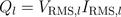
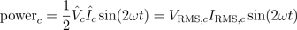

PowerReal and reactive power |
|
Information
This information is part of the Modelica Standard Library maintained by the Modelica Association.
For periodic waveforms, the average value of the instantaneous power is real power P. Reactive power Q is a term associated with inductors and capacitors. For pure inductors and capacitors, real power is equal to zero. Yet, there is instantaneous power exchanged with connecting network.
The series resonance circuit which was also addressed in the AC circuit will be investigated.Power of a resistor
The instantaneous voltage and current are in phase:


Therefore, the instantaneous power is

A graphical representation of these equations is depicted in Fig. 1

|
Real power of the resistor is the average of instantaneous power:

Power of an inductor
The instantaneous voltage leads the current by a quarter of the period:


Therefore, the instantaneous power is

A graphical representation of these equations is depicted in Fig. 2

|
Reactive power of the inductor is:

Power of a capacitor
The instantaneous voltage lags the current by a quarter of the period:


Therefore, the instantaneous power is

A graphical representation of these equations is depicted in Fig. 3

|
Reactive power of the capacitor is:

Complex apparent power
For an arbitrary component with two pins, real and reactive power can be determined by the complex phasors:

In this equation * represents the conjugate complex operator